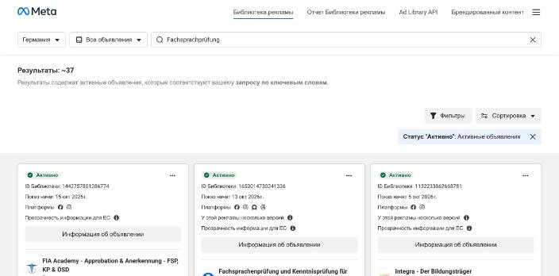

37
«Fachsprachprüfung»
Весь рынок подготовки врачей к языковому экзамену — меньше четырёх десятков активных объявлений на страну.
Что это значитКлик здесь будет в разы дешевле, чем в школьном репетиторстве, где рубятся сети с бюджетами. Мы можем войти с тестовыми 200–300 долларами и реально получить объём.